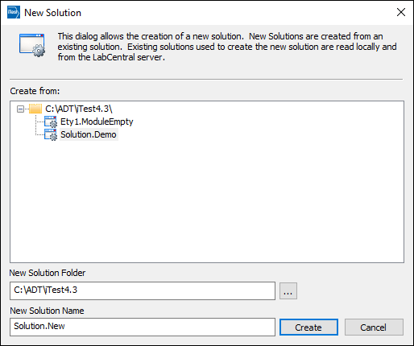
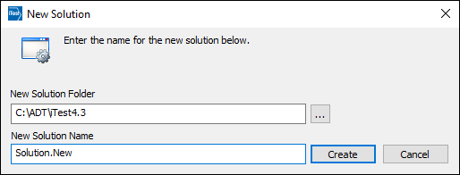

iTest User's Guide
Typically, solutions are located in the iTest folder (i.e., C:\ADT\iTestX.X, where X.X is the product version). External solutions, or solutions placed outside the iTest folder, can be opened using the SelectSupport.exe tool. To do this, a junction point is created in the $SYSTEMDIR to the external solution folder. The term "link" is used interchangeably with "junction point" throughout the documentation and the iTest software to refer to these created junction points.
To link to an external solution, do the following:
SelectSupportExternalSolution=TRUE to the config.ini file.
New solutions can be created using an existing solution or a ZIP file by selecting the <New solution...> option in the Select Solution dialog. When SelectSupportExternalSolution=TRUE, you can specify the location of the new solution in the New Solution Folder field. Click the (  ) button to browse for a folder location.
) button to browse for a folder location.
After specifying the folder and name for the new solution, click OK. The new solution is added to the list of available solutions/modules in the Select Solution dialog. In addition, a junction point to the external solution is created in the iTest $SYSTEMDIR folder. For more information about creating solutions, refer to the Creating New Solutions documentation.
New Solution Dialog - Using an Existing Solution

New Solution Dialog - Using a ZIP File

To automatically delete the junction point that was created, add the DeleteExternalSolutionLinkWhenDone=TRUE config.ini setting. This setting will cause the junction point to be deleted when all applications using it have exited. The external solution will no longer be available in the Select Solution dialog.